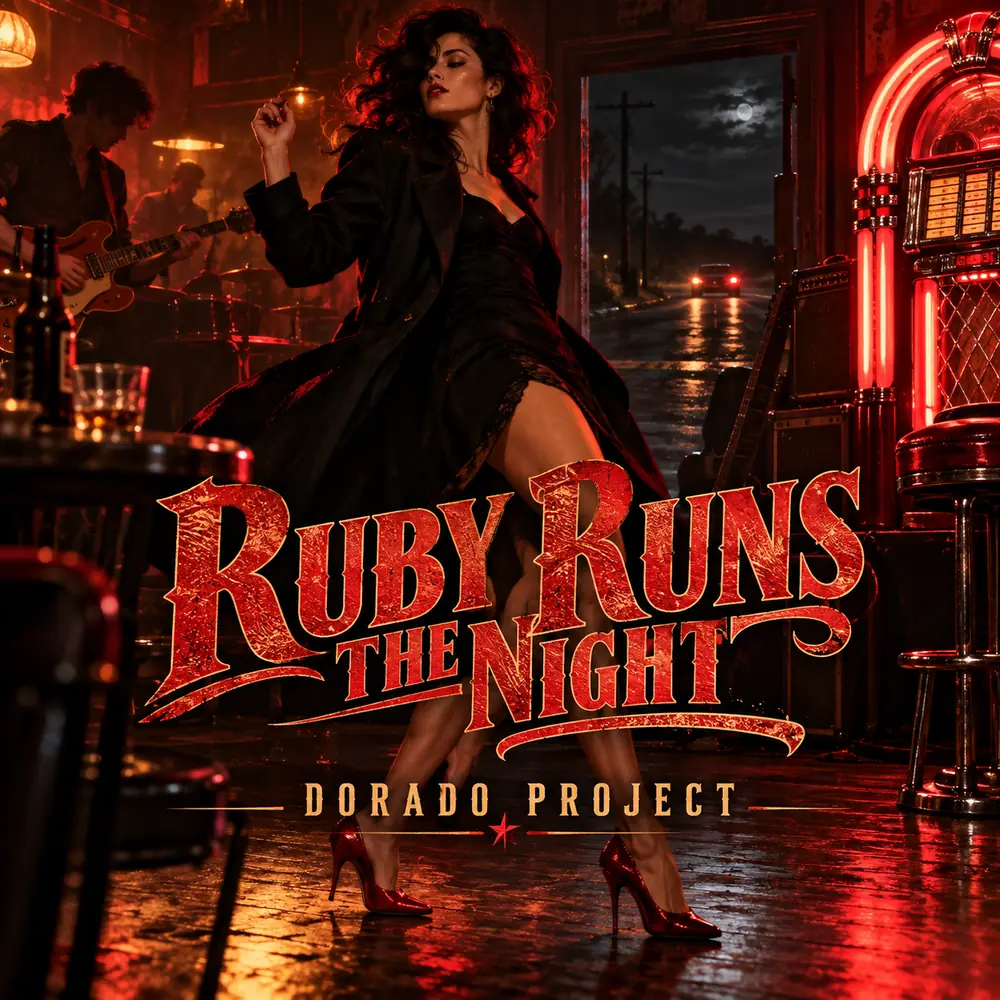

SINGLE · ROCK
Ruby Runs the Night
Hard rock / Rockabilly
Ruby walks into a quiet roadside bar and turns the night upside down: dark rock 'n' roll, heavy guitars, rockabilly swing and a deep baritone.
Listen on Spotify →
SINGLE · ROCK
Hard rock / Rockabilly
Ruby walks into a quiet roadside bar and turns the night upside down: dark rock 'n' roll, heavy guitars, rockabilly swing and a deep baritone.
Listen on Spotify →From synthpop to rock: explore more tracks and the story behind Dorado Project.
Explore all tracks →